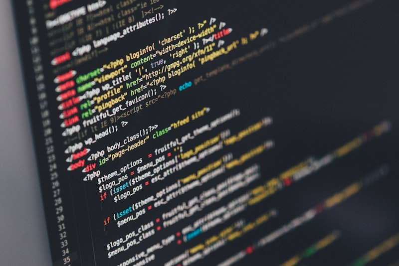

Incisos del resultado
A. Ubicación de delitos y faltas administrativas aplicables al software
1 — Piratería y Falsificación
Piratería y Falsificación de Software

La piratería de software consiste en copiar, distribuir, vender o instalar programas sin autorización del titular. La falsificación ocurre cuando se fabrican copias ilegales que aparentan ser originales, con logotipos, empaques y números de serie falsos.
Piratería de Usuario Final
Instalar más copias del software de las permitidas por la licencia. Ejemplo: una licencia para un equipo instalada en cinco. Puede generar sanciones en auditorías de software.
Uso Excesivo del Servidor por parte del Cliente
Exceder los límites pactados en servicios de hosting o nube (memoria, ancho de banda, almacenamiento). Puede afectar a otros usuarios o provocar suspensión del servicio. No siempre es delito pero sí incumplimiento contractual.
Piratería de Internet
Distribución ilegal de software mediante páginas de descarga, redes P2P, torrents y plataformas no autorizadas. Reduce ingresos a desarrolladores y fomenta riesgos de seguridad.
Carga de Disco Duro
Vendedores que instalan software sin licencia en computadoras nuevas para aumentar su valor comercial. Común en mercados informales; constituye un delito contra los derechos de autor.
Falsificación de Software
Reproducción y venta de copias que imitan completamente al producto original: empaques falsos, certificados falsificados y claves de activación ilegales. Puede involucrar además fraude comercial.
Legislación y Normativa de Software en México
Los delitos relacionados con el software se regulan en: Código Penal Federal (acceso ilícito, daño a sistemas, fraude), Ley Federal del Derecho de Autor (protege el software como obra literaria) y Ley de Propiedad Industrial (protege marcas, patentes y modelos industriales relacionados).
Policía Cibernética Mexicana
División especializada de la Guardia Nacional para investigar delitos electrónicos en coordinación con fiscalías y organismos de seguridad digital nacionales e internacionales.
Robo de identidad
Fraudes electrónicos
Hackeos
Ciberacoso
Piratería de software
2 — Ley Federal del Derecho de Autor
Ley Federal del Derecho de Autor — Capítulo IV

El software en México está protegido como obra literaria: el código fuente tiene la misma protección legal que un libro.
Artículos 101 al 106
Regulan los derechos patrimoniales del autor: duración de la protección (70 años después de la muerte del autor), formas legales de explotación y los derechos exclusivos sobre reproducción, distribución y modificación del software.
Artículos 111 al 113
Establecen sanciones contra quienes violen los derechos de autor: indemnizaciones económicas, clausura de establecimientos, destrucción de copias ilegales y penas de prisión para infractores reincidentes.
3 — Acceso No Autorizado a Sistemas
Acceso No Autorizado a Sistemas de Información

Ocurre cuando alguien entra sin permiso a computadoras, bases de datos, redes privadas o servidores. Es delito aunque no se modifique la información.
Sabotaje Informático
Destruir, alterar o inutilizar sistemas digitales intencionalmente: borrar bases de datos, introducir virus o bloquear servidores.
Fraude Informático
Uso de sistemas digitales para engañar y obtener beneficio económico ilegal: phishing, clonación de tarjetas y transferencias no autorizadas.
Espionaje Informático o Fuga de Datos
Obtención ilegal de información confidencial: robo de secretos industriales, filtración de bases de datos o venta de información personal.
Herramientas de Software Comúnmente Utilizadas
Sistemas OperativosWindows, Linux, macOS. Base de cualquier sistema informático.
Antivirus / EDRKaspersky, ESET, Defender. Detección y eliminación de malware.
Navegadores WebChrome, Firefox, Edge. Acceso a internet y servicios en línea.
OfimáticaMicrosoft 365, Google Workspace. Documentos y contratos digitales.
Herramientas de ProgramaciónIDEs, compiladores, repositorios para desarrollo de software.
Almacenamiento en la NubeGoogle Drive, OneDrive, Dropbox. Gestión de archivos e información.
VPNRedes privadas virtuales para cifrado de comunicaciones.
Gestores de ContraseñasAutenticación segura y control de accesos a sistemas.
Artículos 211 bis 1 al bis 7 del Código Penal Federal
Sanciones penales por acceso ilícito a sistemas y equipos de informática. Las penas aumentan según si el sistema afectado es privado, estatal o financiero, y si el responsable es servidor público.
bis 1 — sistemas privados
bis 2 — sistema financiero
bis 3 — Estado (autorizado)
bis 4 — finanzas (autorizado)
bis 5 — seguridad pública
bis 6 — agravante servidor público
bis 7 — concurso de delitos
4 — Autoría y Creación
Autoría y Creación de Software

Propiedad Intelectual
Conjunto de normas que protegen las creaciones del intelecto. El autor tiene derechos morales (reconocimiento permanente, inalienables) y patrimoniales (control económico, transferibles). Si el software se crea dentro de una empresa, los derechos patrimoniales generalmente pertenecen al empleador según contrato.
Propiedad Industrial
Protege patentes, marcas, diseños industriales y modelos de utilidad. En tecnología aplica a innovaciones técnicas como chips y hardware.
Requisitos para Registro ante INDAUTOR
- Solicitud oficial dirigida al INDAUTOR.
- Identificación del autor y datos del titular de los derechos.
- Pago de derechos correspondientes.
- Copia del código fuente en formato digital.
El registro no crea el derecho pero sirve como prueba legal.
Qué se Considera Público y Privado
Público: datos accesibles a cualquier persona, publicados oficialmente. Privado: datos personales, información confidencial empresarial y bases de datos protegidas.
5 — Contratos y Licencias
Contratos y Licencias de Software
Acuerdos legales que establecen cómo puede utilizarse un programa: número de instalaciones, restricciones, derechos del usuario y responsabilidades.
Licencia ComercialPago por uso. Restricciones estrictas de copia y distribución.
Licencia EducativaPrecio reducido para instituciones académicas.
Software Libre (GPL)Libre uso, modificación y distribución del código fuente.
EULALicencia de usuario final aceptada al instalar el software.
FreewareGratuito pero sin acceso al código fuente.
Creative CommonsPermite usos específicos según la variante elegida.
B. Normativas, delitos y faltas aplicables al equipo de cómputo
6 — Normativas Institucionales
Normativas Aplicadas al Equipo de Cómputo

De la Responsabilidad — Art. 2
Por cada equipo de cómputo, habrá un servidor público responsable, quien deberá observar las disposiciones de esta normatividad, auxiliado por el administrador de la unidad informática, quien a su vez es responsable directo de todos los bienes informáticos que por función le corresponde administrar.
Del Respaldo, Ambiente y Limpieza — Art. 3
El equipo de cómputo deberá mantenerse en un sitio apropiado, iluminado, ventilado, limpio y libre de polvo. Los responsables, a través de los administradores de la unidad informática, deberán solicitar a la Dirección General de Modernización y Sistemas las condiciones adecuadas de operación.
De los Servicios Institucionales — Art. 6
Es responsabilidad de los administradores de unidades informáticas instalar o, en su caso, solicitar la instalación del software correspondiente a los servicios institucionales que le hayan sido autorizados al equipo de cómputo de su área, a fin de mantenerlos vigentes.
De las Adquisiciones de Equipo de Cómputo y Suministros — Art. 8
La Dirección General de Modernización y Sistemas analizará y presentará el dictamen técnico de las requisiciones de equipo, software y suministros para equipo de cómputo, a fin de asegurar que alcance la mayor utilidad y compatibilidad con los proyectos implementados, en proceso o futuros, a fin de que, en términos de la ley aplicable, se determine su adquisición.
7 — Acceso No Autorizado al Equipo
Acceso No Autorizado a Equipos de Cómputo y de Telecomunicaciones
La entrada a los documentos privados en cualquier ordenador mediante programas o técnicas que evaden los controles de seguridad, sin autorización del propietario.
Riesgos para las Empresas
- Acceso no autorizado a datos personales de clientes o empleados.
- Acceso a información corporativa confidencial con posibilidad de introducir cambios fraudulentos.
- Evasión de procesos de aprobación internos para transferencias u operaciones.
Riesgos para los Usuarios
- Lectura no autorizada del correo personal.
- Envío de correos bajo el nombre de otro usuario (suplantación de identidad).
- Uso del equipo de forma no autorizada para causar daños a terceros.
Medidas para Evitar la Entrada a los Equipos de Cómputo
- Todos los sistemas de comunicaciones estarán debidamente protegidos con infraestructura de seguridad (firewall, antivirus, IDS).
- Las visitas deben portar identificación con código de colores de acuerdo al área que visitan.
- Las visitas internas o externas podrán acceder a áreas restringidas siempre que estén acompañadas por al menos un responsable autorizado.
Autenticación 2FA
Actualizaciones frecuentes
Firewall activo
Cifrado de discos
Contraseñas robustas
VPN corporativa
8 — Arts. 367 al 370 CPF
Artículos 367 al 370 CPF — Robo de Equipo
Artículo 367 — Definición de Robo
Comete el delito de robo: el que se apodera de una cosa ajena mueble, sin derecho y sin consentimiento de la persona que puede disponer de ella con arreglo a la ley.
El equipo de cómputo, al ser un bien mueble, queda plenamente bajo la protección de este artículo.
Artículo 368 — Equiparación al Robo
Se equiparan al robo y se castigarán como tal: el apoderamiento o destrucción dolosa de una cosa propia mueble; el uso o aprovechamiento de energía eléctrica, magnética, electromecánica, de cualquier fluido o de cualquier otro que tenga valor económico, apoderándose de ellos sin derecho y sin consentimiento de la persona que legalmente pueda autorizarlo.
Artículo 369 — Consumación del Delito
Para la aplicación de la sanción, se dará por consumado el robo desde el momento en que el ladrón tiene en su poder la cosa robada, aun cuando la abandone o lo desapoderen de ella.
Artículo 370 — Penas según el Valor
Cuando el valor intrínseco de lo robado no exceda de cien veces el salario, se impondrá hasta dos años de prisión y multa hasta de cien veces el salario. Cuando exceda de ese límite pero no de quinientas veces el salario, la pena será de dos a cuatro años de prisión.
Para equipos de alto valor (servidores, equipos especializados), las penas aumentan. Si el robo se comete con violencia o en casa habitada, las sanciones se agravan aún más.